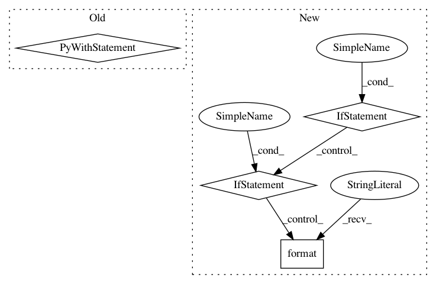

fcd690b14b04c11e7f25b9d473db056c4b7947b3,official/vision/keras_cv/ops/iou_similarity.py,IouSimilarity,__call__,#IouSimilarity#,84
Before Change
Output shape:
[N, M]
with tf.name_scope("IOU"):
return iou(groundtruth_boxes, anchors)
After Change
groundtruth_rank = len(groundtruth_boxes.shape)
anchor_rank = len(anchors.shape)
if groundtruth_rank < 2 or groundtruth_rank > 3:
raise ValueError("`groudtruth_boxes` must be rank 2 or 3, got {}".format(
groundtruth_rank))
if anchor_rank < 2 or anchor_rank > 3:
raise ValueError("`anchors` must be rank 2 or 3, got {}".format(
anchor_rank))
if groundtruth_rank < anchor_rank:
raise ValueError("`groundtruth_boxes` is unbatched while `anchors` is "
"batched is not a valid use case, got groundtruth_box "
"rank {}, and anchors rank {}".format(
groundtruth_rank, anchor_rank))
return iou(groundtruth_boxes, anchors)
In pattern: SUPERPATTERN
Frequency: 3
Non-data size: 4
Instances
Project Name: tensorflow/models
Commit Name: fcd690b14b04c11e7f25b9d473db056c4b7947b3
Time: 2020-09-30
Author: tanzheny@google.com
File Name: official/vision/keras_cv/ops/iou_similarity.py
Class Name: IouSimilarity
Method Name: __call__
Project Name: daavoo/pyntcloud
Commit Name: cdbe12c9ecc86fb54e6310d6aeab98edc6eba879
Time: 2017-05-02
Author: daviddelaiglesiacastro@gmail.com
File Name: pyntcloud/plot/points.py
Class Name:
Method Name: plot_PyntCloud
Project Name: Cadene/bootstrap.pytorch
Commit Name: 5d5209a072c84408e0856e2a1b6c193a439920de
Time: 2019-09-09
Author: mcoaky@gmail.com
File Name: bootstrap/lib/options.py
Class Name: Options
Method Name: load_yaml_opts